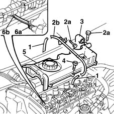

1036H14 valve tappets - check clearance
- Path
- Procedures > 10 ENGINE UNIT > 1036 TIMING SYSTEM > 1036H tappets and rocker shafts > 1036H14 valve tappets - check clearance
- Kind
- repair procedure (removal / refitting; the operation number is the code)
- Applies to
- engines: 1.9 JTD 8V; all production periods
- Interactive page
- https://sloeber94.github.io/elrnDB-fMltpl/en/#/2891376
Applies to: engines: 1.9 JTD 8V; all production periods
 Dismantling
Dismantling
 Reassembling
Reassembling1016A10 sound-proofing cover - r + r
1. Disconnect both press-fitted rubber hoses from the ends of the rigid vacuum pipe.
2. Unscrew retaining bolts (2a) and remove pipe (2b).
3. Disconnect the engine oil vapour pipe from the cam cover.
4. Unscrew the retaining bolts.
5. Remove the cam cover.
Recover the underlying gasket.
6. Use feeler gauge (6a) to measure gap (6b) between the camshaft riser and tappet plate.
Turn the camshaft and check the gap on all tappets.

Applies to: engines: 1.9 JTD 8V; all production periods
Reassembling
DismantlingFit a new gasket to the cam cover.
Fit the cam cover and tighten the bolts to torque.
 | Fastening | Component | Ø | Value (daNm) |
|---|---|---|---|---|
- | Bolt | CAM COVER | M6 | 0.9 |
Connect the engine oil vapour pipe to the cam cover.
Fit the rigid vacuum pipe.
Connect both rubber hoses to ends of the rigid vacuum pipe.